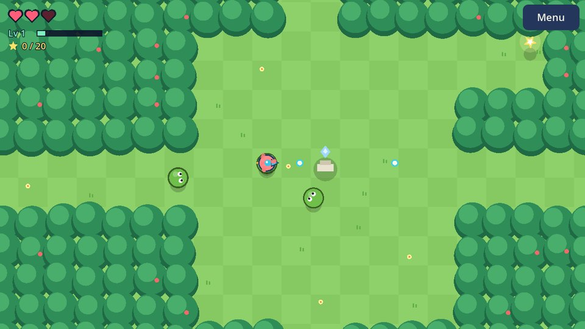
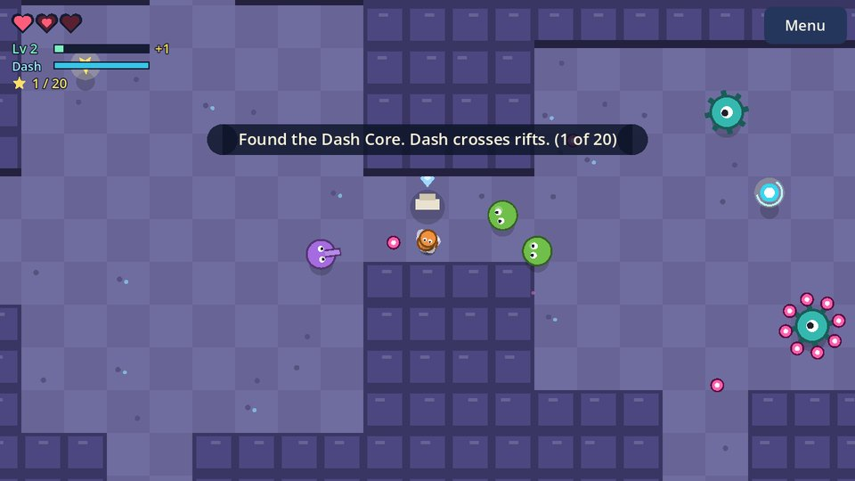
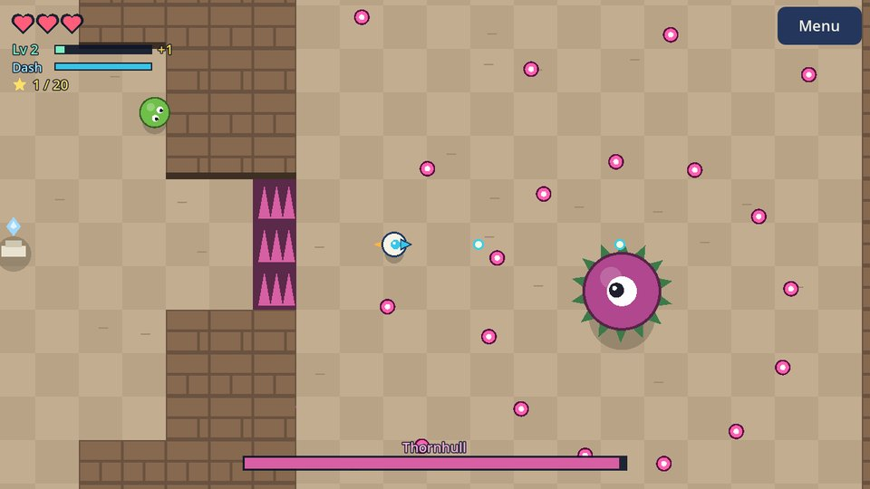

Tiny Tailwind
A twin-stick adventure
Fly a small ship through the Sunmeadow. Shoot your way past brambly critters, find 20 keepsakes, win the dash in Echo Hollow and calm the warden of Thornkeep. Defeat never costs a thing.
Version 0.1.0. Release notes · Backlog · Source on GitHub



What kind of game is this?
Twin-stick shooter. One thumb moves, the other aims and fires. Quick, exact and easy to pick up.
An adventure. One open meadow, a cave and a keep. A new ability opens new ground.
Kind. Checkpoints are close. Defeat sends you back with everything you had. Assists are always there.
A first beta. One biome, about 20 minutes. More of the world comes once it feels right.
Things to do
- Explore the Sunmeadow and find all 20 keepsakes. The journal keeps count.
- Collect crystals, level up and upgrade Power, Fire rate, Speed and Range.
- Find three Heart Seeds for more hearts.
- Win the Dash Core in Echo Hollow, then dash across rifts.
- Clear the gated rooms of Thornkeep.
- Calm the warden Thornhull and beat your own best time.
- Fill in the map as you go.
Controls
Keyboard and mouse
WASD moves. The mouse aims and the left button fires. Arrow keys also aim and fire. Space or the right button dashes. Esc opens Menu.
WASD moves. The mouse aims and the left button fires. Arrow keys also aim and fire. Space or the right button dashes. Esc opens Menu.
Xbox controller
Left stick moves. Right stick aims and fires. A, RB or RT dashes. View or Menu opens the Menu. In menus the D-pad or left stick moves, A chooses and B goes back.
Left stick moves. Right stick aims and fires. A, RB or RT dashes. View or Menu opens the Menu. In menus the D-pad or left stick moves, A chooses and B goes back.
Touch
Left thumb moves. Right thumb aims and fires. Dash button on the right. Menu at the top right.
Left thumb moves. Right thumb aims and fires. Dash button on the right. Menu at the top right.
Play with an Xbox controller
Any Xbox Wireless Controller with Bluetooth works. That is every Series X|S controller and the Xbox One controllers made since 2016. If the plastic around the Xbox button matches the face of the controller, it has Bluetooth. Other controllers that your phone or browser sees as a standard gamepad use the same buttons. You can play the whole game with the controller alone.
Buttons
- Left stick: move.
- Right stick: aim and fire.
- A, RB or RT: dash, once you have the Dash Core.
- View or Menu: open and close the Menu.
- D-pad or left stick: move between menu buttons.
- A: choose. B: go back.
On Android
- Hold the Xbox button to turn the controller on.
- Hold the small Pair button on top for 3 seconds, until the Xbox button flashes fast.
- On your phone, open Settings, then Connected devices, then Pair new device.
- Tap Xbox Wireless Controller. The Xbox button stays lit when it is connected.
- Open Tiny Tailwind. The touch controls hide as soon as you use the controller.
In your browser
- Connect the controller to your computer with a USB cable or Bluetooth.
- Open Play in your browser. Chrome, Edge, Firefox and Safari all work.
- Press any button once after the game loads, so the browser sees the controller.
Install on Android
- Tap Download for Android on this page.
- Open the file. Allow installs from your browser if your phone asks.
- Tap Install, then Open.
Feedback
Tell Brian what you think. Useful things to note:
- How moving, aiming and dashing feel.
- Whether enemies and the warden are too easy or too hard.
- Where you got lost or stuck.
- Anything that looks wrong, with a screenshot.
- Your phone, controller or browser.